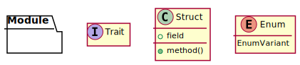

4.1. Public API¶
This section describes the public API of the library. The provided types and functions are used by other applications to create Tic Tac Toe games. The legend shown in Figure 4.1 is used for the type diagrams in this section.

Figure 4.1 Legend used for the type diagrams in this section.¶
An overview of the major public types is shown in Figure 4.2.

Figure 4.2 Major public modules, structures, and other types. Note: the module contains additional supporting types that are not shown here.¶
The library contains a single public module that holds the public types. The naming conventions used in this library follow those described in the Rust API Guidelines 1 per the Idiomatic Rust APIs user story.
Each of the major and supporting types are described below.
4.1.1. Game Management¶
Game management is handled by the Game structure. This structure is one of the central types provided by the library. It contains the state machine logic, holds the underlying game board, and enforces the rules of Tic Tac Toe. Figure 4.3 shows the Game structure and other types related to management of Tic Tac Toe games.
![hide empty fields
hide empty methods
class Game {
+new()
+board() -> Board
+state() -> State
+free_positions() -> FreePositions
+can_move(Position) -> bool
+do_move(Position) -> Result<State, InvalidMoveError>
+start_next_game() -> State
}
enum State {
PlayerXMove
PlayerOMove
PlayerXWin[HashSet<Position>]
PlayerOWin[HashSet<Position>]
CatsGame
+is_game_over() -> bool
}
class FreePositions << Iterator >> {
+Item: Position
+next() -> Option<Item>
}
class InvalidMoveError << Error >> {
}
Game *-- Board
Game *-- State
FreePositions --[hidden] InvalidMoveError](../_images/plantuml-e0bff4a04ca4db57cc17a507407b8e9ac4001cce.svg)
Figure 4.3 The Game structure contains a State and a Board.¶
A state machine is used determine which player has the next move or when the game is over. The state diagram is shown in Figure 4.4.
![hide empty description
[*] --> PlayerXMove
[*] --> PlayerOMove
PlayerXMove --> PlayerOMove
PlayerXMove --> PlayerXWin
PlayerXMove --> CatsGame
PlayerOMove --> PlayerXMove
PlayerOMove --> PlayerOWin
PlayerOMove --> CatsGame](../_images/plantuml-54833c3598e19d85d75d20dd988336c5557b179e.svg)
Figure 4.4 State diagram of a Tic Tac Toe game.¶
When a new game starts either player X or player O takes the first turn. The players alternate making their moves until one of the end game conditions is encountered. The player that did not have the first turn last game takes the first turn next game.
4.1.1.1. Struct Game¶
Members of the Game structure are as follows:
- new()
Creates a new Tic Tac Toe game structure. Note: use
start_next_game()for playing consecutive games to ensure each player gets to start the game.- board()
Gets the board associated with the game.
- state()
Gets the current state of the game.
- free_positions()
Gets an iterator over the free positions that do not have an owner and thus can be provided to
do_move(). When the game is over there are no free positions.- can_move()
Indicates if the square at the indicated position can be marked as owned. That is, if
can_move()returnstruefor a given position thendo_move()is guaranteed to be successful.- do_move()
Marks the indicated square as being owned by the current player. The state of the game is updated as a side effect of
do_move()and the new state of the game is returned. An error is returned if the position is already owned or if the game is over.- start_next_game()
Starts the next game by resetting the state machine ensuring the player who went second last game goes first next game. This can be called at any time even if the current game is not over. The new state of the game is returned.
Trait Implementations
Clone 2
Related Requirements
4.1.1.2. Enum Sate¶
The game state enumeration contains a variant for each possible game state described in Figure 4.4 along with some additional helper methods.
- PlayerXMove
Player X’s turn to mark a free position.
- PlayerOMove
Player O’s turn to mark a free position.
- PlayerXWin[HashSet<position>]
Player X has won the game. The set of positions that contributed to the win are provided as the enum value.
- PlayerOWin[HashSet<position>]
Player O has won the game. The set of positions that contributed to the win are provided as the enum value.
- CatsGame
The game has ended in a draw where there are no winners.
- is_game_over()
Indicates if the state represents one of the game over states. That is, if either player has won or it is a cat’s game then
trueis returned; otherwise,falseis returned.
The set of positions provided to PlayerXWin and PlayerOWin contain all
the positions that contributed to the victory. Usually, there will be three items
in this set representing a row, column, or diagonal. However, there are some
situations as Figure 3.1 where more than three squares
can contribute to a victory.
Trait Implementations
Clone
Debug
Eq
Related Requirements
4.1.1.3. Struct Free Positions¶
An iterator over free positions that do not have an owner. 3
- next()
Gets the next free position in the board, or None once all the free positions have been returned.
Trait Implementations
Iterator
4.1.1.4. Struct Invalid Move Error¶
Used to indicate moving to the indicated position is invalid. This could be due to the position being owned or the game being over.
Trait Implementations
Error
4.1.2. Board Data¶
The board structure models a Tic Tac Toe game board. It maps the individual positions to owners of the position. It provides functions to access and iterate over each position. The board and square structures along with supporting types are shown in Figure 4.5.

Figure 4.5 The Board structure and supporting types.¶
4.1.2.1. Struct Board¶
Data structure representing the Tic Tac Toe board. Provides multiple ways to access individual squares.
- new()
Constructs a new board based on the given size. Panics if the size is less than one row and one column.
- size()
Gets the size of board, that is the number of rows and columns.
- get()
Gets the owner of the provided position. None is returned if requested position is outside the size of the board.
- get_mut()
Gets a mutable reference ot the owner at the indicated position. This allows the owner of the position to be changed. None is returned if requested position is outside the size of the board.
- iter()
Gets an iterator that iterates over all the squares in the board.
The board structure also implements the Display trait. This provides a formatted output of the board and is suitable for use in simple console applications or debugging purposes. An example of the boards display is shown in Listing 4.1.
+---+---+---+
| X | O | O |
+---+---+---+
| O | X | |
+---+---+---+
| X | | X |
+---+---+---+
Trait Implementations
Display
Clone
4.1.2.2. Struct Iter¶
Implements the iterator trait for iterating over all the positions and owner pairs of the board.
- next()
Gets a tuple containing the next position and owner of that position. None is returned if the end of the board has been reached.
4.1.2.3. Struct Size¶
The size structure represents the size of the board in number of rows and columns.
- rows
The number of rows in the board.
- columns
The number of column in the board.
Trait Implementations
Debug
Copy
Clone
From<(usize, usize)>
Eq
Hash
4.1.2.4. Struct Position¶
The position structure represents a specific board position denoted by row and column.
- row
The row associated with the position.
- column
The column associated with the position.
Trait Implementations
Debug
Copy
Clone
From<(usize, usize)>
Eq
Hash
4.1.2.5. Enum Owner¶
The owner enumeration indicates which player owns a position, if any.
- PlayerX
Player X owns the position.
- PlayerO
Player O owns the position.
- None
No player owns the position.
Trait Implementations
Default
Debug
Copy
Clone
Eq
Hash
4.1.3. AI Opponent¶
The AI opponent structure represents a computer controlled AI player. The AI opponent structure is shown in Figure 4.6.

Figure 4.6 AI Opponent structure.¶
See Artificial Intelligence Algorithms for details on how the AI selects a position.
Member Details
- new()
Constructs a new AI opponent. The mistake probability indicates how likely the AI will fail to consider various situations. A value of 0.0 makes the AI play a perfect game. A value of 1.0 causes the AI to always pick a random position. Values less than 0.0 are set to 0.0 and values greater than 1.0 are set to 1.0.
- get_move()
Gets the position the AI opponent wishes to move based on the provided game. None is returned if the game is over. The AI opponent never tries to select an invalid position, that is a position that is not free.
Trait Implementations
Debug
Related Requirements
Footnotes
- 1
See the [Rust-API-Guidelines] for details.
- 2
Rust’s clone and copy traits both serve to duplicate an object but each goes about duplication in a different manner. Copy performs an operation similar to
memcpywhere it just copies the bits of the object. Alternately, Clone explicitly duplicates the object giving the programmer control over what parts are cloned. For details see the discussion in Trait std::clone::Clone.- 3
Rust’s standard library documentation states “Iterators are heavily used in idiomatic Rust code, so it’s worth becoming familiar with them.” For details see [Rust-Crate-std].